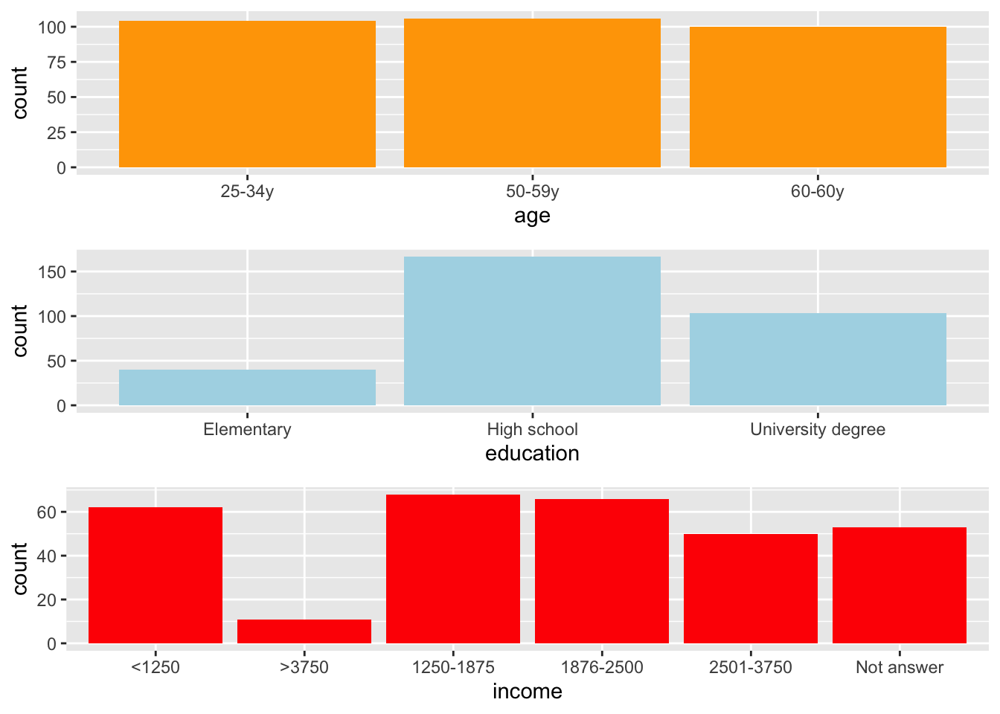
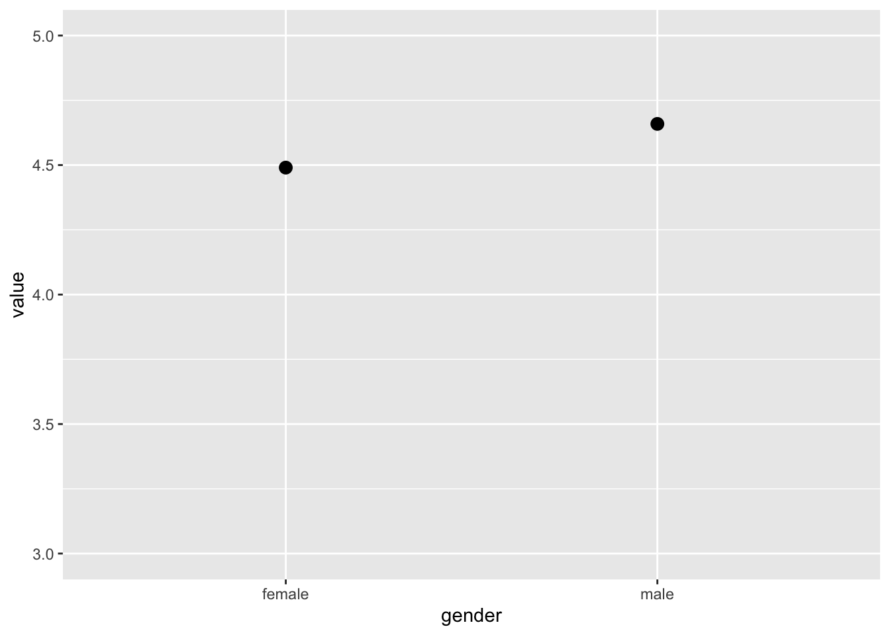
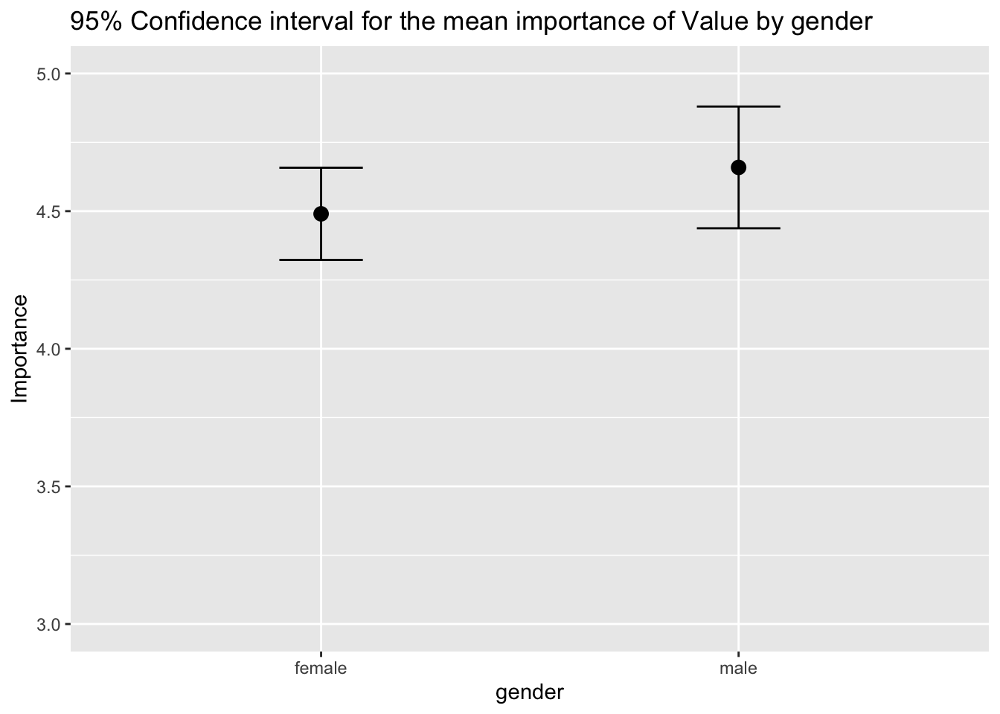
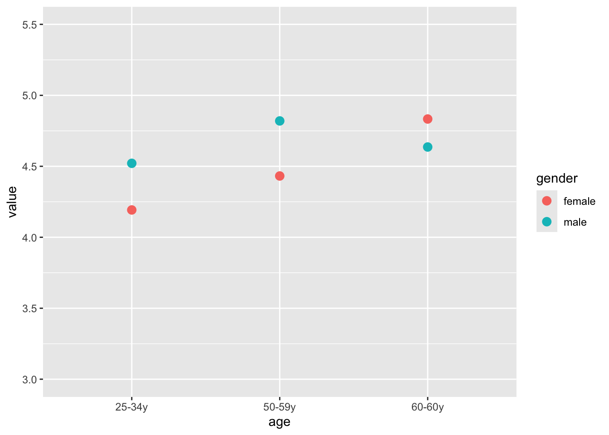

# ============================
# Data Manipulation / Databases
# ============================
library(tidyverse) # Collection of packages for data manipulation (dplyr, tidyr) and visualization (ggplot2)
library(dplyr) # Data manipulation: filtering, summarizing, joining
library(plyr) # Older data manipulation package (mostly superseded by dplyr)
library(dbplyr) # Interface to translate dplyr syntax to SQL for databases
# ============================
# Descriptive Statistics & Visualization
# ============================
library(ggplot2) # Flexible and powerful plotting system
library(ggpubr) # Easy-to-use publication-ready plots with ggplot2 enhancements
library(lattice) # Alternative plotting system for multi-panel plots
library(descr) # Descriptive statistics: frequency tables, crosstabs
library(Rmisc) # Utility functions for summaries: mean, SE, CI
library(knitr) # Dynamic report generation, integration with R Markdown
library(kableExtra) # Enhanced tables for knitr and R Markdown
# ============================
# Classical Statistics / Inference
# ============================
library(MASS) # Classical statistics functions, distributions, datasets, LDA, etc.
library(car) # Companion to Applied Regression: diagnostic tests, ANOVA, VIF
# ============================
# Regression & Machine Learning
# ============================
library(caret) # Unified framework for regression, classification, and model training/tuning
library(leaps) # Subset selection in regression: best subset, forward/backward selectionSeniors Example
Libraries
Import Data
dataseniors<-read.csv2("seniors2.csv", sep=";", dec=",")#read data
data.df<-data.frame(dataseniors[1:310,1:31])#data frame(rectangular data structures)Description:
Value: Degree to which people strive for an optimal value-for-money relation.
Price: Degree to which consumers focus on finding and paying low prices.
Coup: Tendency to respond to a sale, because the discount off the original price influence.
Primav: Tendency to be a source of information for many products, services and places where lower prices may be found.
Priqua: Tendency to consider prices as an indicator of quality.
Prest: Degree to which higher prices are perceived to be a status symbol.
Brand: Degree to which the consumer focuses on brands. # Conv: Degree to which consumers feel that ease or convenience are important.
Impuls: Degree to which consumers are impulse-driven.
Risk: Degree to which consumers have a risk preference.
Innov: Degree to which consumers would like to be innovative or are open to innovation.
Univariate Descriptive Analysis
Describe the socieconomic characteristics of the sample: barcharts
bxp <- ggplot(data.df, aes(x = gender)) + # x = gender -> Variable to plot
geom_bar(aes(y = after_stat(count) / sum(after_stat(count))), # after_stat(count) = absolute freq
fill = "orange") + # after_stat(count) / sum(after_stat(count)) = relative freq
labs(y = "f_i")
dp <- ggplot(data.df, aes(x = mrhp)) + # x = mrhp -> Variable to plot
geom_bar(aes(y = after_stat(count) / sum(after_stat(count))), # after_stat(count) = absolute freq
fill = "lightblue") + # after_stat(count) / sum(after_stat(count)) = relative freq
labs(y = "f_i")
dp1 <- ggplot(data.df, aes(x = place)) +
geom_bar(aes(y = after_stat(count) / sum(after_stat(count))),
fill = "red") +
labs(y = "f_i")
dp2 <- ggplot(data.df, aes(x = numfamily)) +
geom_bar(aes(y = after_stat(count) / sum(after_stat(count))),
fill = "green") +
labs(y = "f_i")
ggarrange(bxp, dp,dp1,dp2,
ncol = 2, nrow = 2)ggplot(data.df, aes(x=numfamily)) +
geom_bar(fill="red")bxp<-ggplot(data.df, aes(x=age)) +
geom_bar(fill="Orange")
dp<-ggplot(data.df, aes(x=education)) +
geom_bar(fill="lightblue")
dp1<-ggplot(data.df, aes(x=income)) +
geom_bar(fill="Red")
ggarrange(bxp, dp,dp1,
ncol = 1, nrow = 3)
Numerical measures for buying behavior
data_df_summary <-data.df %>%
summarise_at(vars(conv:value), # conv:value selects all columns from conv to value
list(avg=mean, med=median)) # You can add other measures
data_df_summary conv_avg brand_avg coup_avg impuls_avg innov_avg prest_avg price_avg
1 3.869935 3.45 3.676839 3.022548 3.682581 2.737323 3.907323
primav_avg priqua_avg risk_avg sale_avg value_avg conv_med brand_med coup_med
1 2.629806 3.669355 3.194194 3.579935 4.549516 3.67 3.5 3.71
impuls_med innov_med prest_med price_med primav_med priqua_med risk_med
1 3 3.6 2.63 3.88 2.5 3.75 3.2
sale_med value_med
1 3.67 4.67#Plot means for buying behavior
data.fr<-data.frame(data.df[1:310,2:13])
S<-colMeans(data.fr,dims=1)
x<-c("conv","brand","coup","impuls","innov","prest","price","primav","priqua","risk","sale","value")
DD<-data.frame(S,x)
ggplot(DD,mapping=aes(x=x,y=S,group=1))+geom_line()Histograms for value
ggplot(data.fr, aes(x = value)) +
geom_histogram(bins=10, fill="lightblue",
color="black")ggplot(data.fr, aes(x = value)) +
geom_histogram(aes(y = after_stat(count) / sum(after_stat(count))),
bins=15, fill="steelblue", color="white") +
labs(y = "relative freq")Density for Value
ggplot(data.fr, aes(x = value)) +
geom_density(fill="skyblue", alpha=0.5)Frequency table for Value (Discretization of continuous variable)
datavalue<-case_when((data.df$value<=2) ~ "1",
(data.df$value>2) &(data.df$value<=3) ~ "2",
(data.df$value>3) &(data.df$value<=4) ~ "3",
(data.df$value>4) &(data.df$value<=5) ~ "4",
(data.df$value>5) &(data.df$value<=6) ~ "5",
(data.df$value>6) &(data.df$value<=7) ~ "6",
(data.df$value==7) ~ "7")
datfreq<-freq(ordered(datavalue),plot=T)
datfreqordered(datavalue)
Frequency Percent Cum Percent
1 12 3.871 3.871
2 26 8.387 12.258
3 64 20.645 32.903
4 97 31.290 64.194
5 87 28.065 92.258
6 24 7.742 100.000
Total 310 100.000 Frequency Table for Price (Discretization of continuous variable)
dataprice<-case_when((data.df$price<=2) ~ "1",
(data.df$price>2) &(data.df$price<=3) ~ "2",
(data.df$price>3) &(data.df$price<=4) ~ "3",
(data.df$price>4) &(data.df$price<=5) ~ "4",
(data.df$price>5) &(data.df$price<=6) ~ "5",
(data.df$price>6) &(data.df$price<=7) ~ "6",
(data.df$price==7) ~ "7")
datfreq<-freq(ordered(dataprice),plot=F)
datfreqordered(dataprice)
Frequency Percent Cum Percent
1 7 2.258 2.258
2 48 15.484 17.742
3 123 39.677 57.419
4 98 31.613 89.032
5 28 9.032 98.065
6 6 1.935 100.000
Total 310 100.000 Frequency Table for Convenience (Discretization of continuous variable)
dataconv<-case_when((data.df$conv<=2) ~ "1",
(data.df$conv>2) &(data.df$conv<=3) ~ "2",
(data.df$conv>3) &(data.df$conv<=4) ~ "3",
(data.df$conv>4) &(data.df$conv<=5) ~ "4",
(data.df$conv>5) &(data.df$conv<=6) ~ "5",
(data.df$conv>6) &(data.df$conv<=7) ~ "6",
(data.df$conv==7) ~ "7")
datfreq<-freq(ordered(dataconv),plot=F)
datfreqordered(dataconv)
Frequency Percent Cum Percent
1 16 5.161 5.161
2 58 18.710 23.871
3 128 41.290 65.161
4 74 23.871 89.032
5 28 9.032 98.065
6 6 1.935 100.000
Total 310 100.000 Boxplots for value, Price and Convenience
bxp<-ggplot(data.df,mapping=aes(y=value))+geom_boxplot(fill="Orange")
dp<-ggplot(data.df,mapping=aes(y=price))+geom_boxplot(fill="lightblue")
dp1<-ggplot(data.df,mapping=aes(y=conv))+geom_boxplot(fill="Red")
ggarrange(bxp, dp,dp1,
ncol = 3, nrow = 1)Bivariate Descriptive Analysis
Generate contingency tables
ConTtable<-table(datavalue,data.df$gender) #Joint absolute frequencies
ConTtable
datavalue female male
1 10 2
2 17 9
3 38 26
4 68 29
5 53 34
6 15 9RConTtable<-prop.table(ConTtable)*100 #Joint relative frequencies
RConTtable
datavalue female male
1 3.2258065 0.6451613
2 5.4838710 2.9032258
3 12.2580645 8.3870968
4 21.9354839 9.3548387
5 17.0967742 10.9677419
6 4.8387097 2.9032258colSums(RConTtable) #Marginal frequencies for gender female male
64.83871 35.16129 rowSums(RConTtable) #Marginal frequencies for Value 1 2 3 4 5 6
3.870968 8.387097 20.645161 31.290323 28.064516 7.741935 CConTtableG<-prop.table(ConTtable,margin=2)*100 #Conditional of Value for fixed gender
CConTtableG
datavalue female male
1 4.975124 1.834862
2 8.457711 8.256881
3 18.905473 23.853211
4 33.830846 26.605505
5 26.368159 31.192661
6 7.462687 8.256881CConTtableM<-prop.table(ConTtable,margin=1)*100 #Conditional of gender for fixed Value
CConTtableM
datavalue female male
1 83.33333 16.66667
2 65.38462 34.61538
3 59.37500 40.62500
4 70.10309 29.89691
5 60.91954 39.08046
6 62.50000 37.50000Box Plot for Conditional Distribution of Value, Price and Convenience (Fixed Gender)
bxp<-ggplot(data.df,mapping=aes(y=value,x=gender))+geom_boxplot(fill="Orange")
dp<-ggplot(data.df,mapping=aes(y=price,x=gender))+geom_boxplot(fill="lightblue")
dp1<-ggplot(data.df,mapping=aes(y=conv,x=gender))+geom_boxplot(fill="Red")
ggarrange(bxp, dp,dp1,
ncol = 3, nrow = 1)Box Plot for Conditional Distribution of Value, Price and Convenience (Fixed Age)
bxp<-ggplot(data.df,mapping=aes(y=value,x=education))+geom_boxplot(fill="Orange")
dp<-ggplot(data.df,mapping=aes(y=price,x=education))+geom_boxplot(fill="lightblue")
dp1<-ggplot(data.df,mapping=aes(y=conv,x=education))+geom_boxplot(fill="Red")
ggarrange(bxp, dp,dp1,
ncol = 3, nrow = 1)Conditional mean and sd for value and price, fixed gender
data_df_grouped <- group_by(data.df,gender)
sample_size <- data_df_grouped %>%
dplyr::summarise(n=n()) %>%
deframe()
sample_sizefemale male
201 109 data_df_summary <-data_df_grouped %>%
summarise_at(vars(value, price),
list(avg=mean,stde=sd))
data_df_summary# A tibble: 2 5
gender value_avg price_avg value_stde price_stde
<chr> <dbl> <dbl> <dbl> <dbl>
1 female 4.49 3.84 1.20 0.940
2 male 4.66 4.03 1.16 0.978Violin Plot
ggplot(data.df, aes(x = gender, y = innov, fill=gender)) +
geom_violin(alpha=0.7)Density comparison across groups
ggplot(data.df, aes(x = innov, fill = gender)) +
geom_density(alpha=0.4) +
labs(title="Density comparison by group")Confidence Intervals
Confidence interval for the population mean (unknown variance)
CI_m <- function (x, ci = 0.95)
{
standard_deviation <- sd(x)
sample_size <- length(x)
Margin_Error <- abs(qt((1-ci)/2,df=sample_size-1))* standard_deviation/sqrt(sample_size)
df_out <-
data.frame(
sample_size=length(x),
Mean=mean(x), sd=sd(x),
Margin_Error=Margin_Error,
'CI lower limit'=(mean(x) - Margin_Error),
'CI Upper limit'=(mean(x) + Margin_Error)) |>
tidyr::pivot_longer(
names_to = "Measurements",
values_to ="values", 1:6
)
return(df_out)
}
# Example. Compute 95% confidence interval for the mean of 'Value' in the population
CI_m(data.df$value, ci=0.95)# A tibble: 6 2
Measurements values
<chr> <dbl>
1 sample_size 310
2 Mean 4.55
3 sd 1.19
4 Margin_Error 0.133
5 CI.lower.limit 4.42
6 CI.Upper.limit 4.68 Creating a Sample from an Existing Population
set.seed(1)
sample1 <-
rnorm(n=50, mean=5.44, sd=2)
sample2 <-
rnorm(n=75, mean=5.44, sd=2)
sample3 <-
rnorm(n=60, mean=5.44, sd=2)
sample4 <-
rnorm(n=100, mean=5.44, sd=2)
sample5 <-
rnorm(n=150, mean=5.44, sd=2)
CI_m(sample1, ci=0.50)# A tibble: 6 2
Measurements values
<chr> <dbl>
1 sample_size 50
2 Mean 5.64
3 sd 1.66
4 Margin_Error 0.160
5 CI.lower.limit 5.48
6 CI.Upper.limit 5.80 CI_m(sample2, ci=0.50)# A tibble: 6 2
Measurements values
<chr> <dbl>
1 sample_size 75
2 Mean 5.67
3 sd 1.81
4 Margin_Error 0.142
5 CI.lower.limit 5.52
6 CI.Upper.limit 5.81 CI_m(sample3, ci=0.50)# A tibble: 6 2
Measurements values
<chr> <dbl>
1 sample_size 60
2 Mean 5.30
3 sd 2.09
4 Margin_Error 0.183
5 CI.lower.limit 5.12
6 CI.Upper.limit 5.49 CI_m(sample4, ci=0.50)# A tibble: 6 2
Measurements values
<chr> <dbl>
1 sample_size 100
2 Mean 5.40
3 sd 2.07
4 Margin_Error 0.140
5 CI.lower.limit 5.26
6 CI.Upper.limit 5.54 CI_m(sample5, ci=0.50)# A tibble: 6 2
Measurements values
<chr> <dbl>
1 sample_size 150
2 Mean 5.52
3 sd 1.98
4 Margin_Error 0.109
5 CI.lower.limit 5.41
6 CI.Upper.limit 5.63 Confidence interval for the population proportion in a Bernoulli distribution
CI_p <- function(x, ci = 95)
{
vcat<-na.omit(x)
p <- mean(x)
standard_deviation <- sqrt(p*(1-p))
sample_size <- length(x)
Margin_Error <- abs(qnorm((1-ci)/2))* standard_deviation/sqrt(sample_size)
df_out <-
data.frame(
sample_size=length(x),
p,
Margin_Error=Margin_Error,
'CI lower limit'=(p - Margin_Error),
'CI Upper limit'=(p + Margin_Error)) |>
tidyr::pivot_longer(
names_to = "Measurements",
values_to ="values", 1:5
)
return(df_out)
}Example. Compute 95% confidence interval for the population proportion of consumers that give 5 or more to Value
prop <- ifelse(data.df$value > 5, 1, 0) #Generate the Bernoulli sample with 1(meet the condition) and 0
prop.table(table(prop))prop
0 1
0.6419355 0.3580645 CI_p(prop ,ci=0.95)# A tibble: 5 2
Measurements values
<chr> <dbl>
1 sample_size 310
2 p 0.358
3 Margin_Error 0.0534
4 CI.lower.limit 0.305
5 CI.Upper.limit 0.411 Plot 95% confidence intervals for Value divided by gender.
Function summarySE in the library Rmisc allow us to summarise one variable divided in groups.
df <- summarySE(data.df, measurevar="value", groupvars="gender", na.rm=T)
graf.point1 <- ggplot(df, aes(x=gender, y=value)) +
geom_point(size = 3) + ylim(3, 5)
graf.point1
graf.point <- graf.point1 + geom_errorbar(aes(ymin=value-ci, ymax=value+ci), width = 0.2) + ylab("Importance") +
ggtitle("95% Confidence interval for the mean importance of Value by gender")
graf.point
Plot 95% confidence intervals for Value divided by gender and age.
df <- summarySE(data.df, measurevar="value", groupvars=c("gender","age"), na.rm=T)
graf.point1 <- ggplot(df, aes(x=age, y=value, colour=gender)) +
geom_point(size = 3) + ylim(3, 5.5)
graf.point1
graf.point <- graf.point1 + geom_errorbar(aes(ymin=value-ci, ymax=value+ci), width = 0.2) + ylab("Importance") +
ggtitle("95% Confidence interval for the mean importance of Value by gender and age")
graf.pointPlot 95% confidence intervals for Coup divided by gender and age.
df <- summarySE(data.df, measurevar="coup", groupvars=c("gender","age"), na.rm=T)
graf.point1 <- ggplot(df, aes(x=age, y=coup, colour=gender)) +
geom_point(size = 2) + ylim(1, 5.5)
graf.point1graf.point <- graf.point1 + geom_errorbar(aes(ymin=coup-ci, ymax=coup+ci), width = 0.2) + ylab("Importance") +
ggtitle("95% Confidence interval for the mean importance of Coupons by gender and age")
graf.pointHypothesis Testing
Error type I, true mean equal to 5 (slide 7/33)
aveg=5 #(true parameter)
std=1.2 #(true parameter)
s=std/sqrt(30)#(standard error of mean)
lb=qnorm(0.95,aveg,s)
ub=qnorm(0.999999999,aveg,s)
x <- seq(-3,3,length=100)*s + aveg
hx <- dnorm(x,mean=aveg,sd=s)
plot(x, hx, type="n", xlab="sample means",ylab="",
main="Error type I in a 95% confidence test (true par. =5).", axes=FALSE)
i <- x >= lb & x <= ub
lines(x, hx)
polygon(c(lb,x[i],ub), c(0,hx[i],0), col="red")
area <- pnorm(ub, aveg, s) - pnorm(lb, aveg, s)
result <- paste("P(H1/H0) =",
signif(area, digits=3))
mtext(result,3)
axis(1, at=seq(4, 6, 0.1), pos=0)Error type II,true parameter mu=5.8 (slide 8/33)
std=1.2
n=30
aveg=5.8
s=std/sqrt(30)
pot<-power.t.test(n=n,delta=0.8,sd=std,sig.level=0.05, type="one.sample",alternative="one.sided",strict = TRUE)
ub=qnorm((1-pot$power),aveg,s)
lb=qnorm(0.00001,aveg,s)
x <- seq(-3,3,length=100)*s + aveg
hx <- dnorm(x,mean=aveg,sd=s)
plot(x, hx, type="n", xlab="sample means",ylab="",
main="Error type II in a 95% confidence test (true par. =5.8).", axes=FALSE)
i <- x >= lb & x <= ub
lines(x, hx)
polygon(c(lb,x[i],ub), c(0,hx[i],0), col="red")
area <- pnorm(ub, aveg, s) - pnorm(lb, aveg, s)
result <- paste("P(H0/H1) =",
signif(area, digits=3))
mtext(result,3)
axis(1, at=seq(0, 10, 0.2), pos=0)Hypothesis testing in seniors file
Null=mu_{price}=4; Alternative= mu_{price}<4 (slide 13/33 to 15/33)